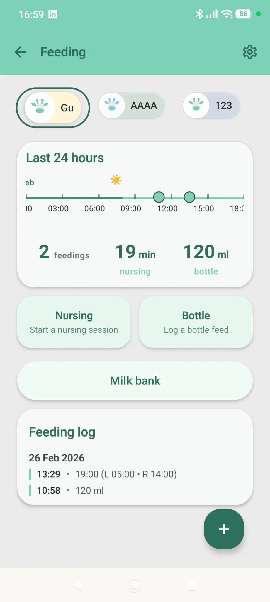

Check the age
Fix the highlighted field, then tap Generate plan again.
Your plan appears here
Enter age and texture stage, then tap Generate plan to see your next steps.

What the solids progression planner suggests
Enter your baby's age in months (4 to 24) and the texture stage they are at now: puree, mashed, or finger food. The planner returns a focus for their age, one next step for their texture, and a safety reminder.
It is a simple guide for complementary feeding, meaning solid foods alongside breast milk or formula. Your baby's readiness and your pediatrician's advice come first.
How it works
The planner picks one line from the age table, then adds one line for the texture stage, then always adds the safety line.
| Age (months) | Focus shown |
|---|---|
| Under 6 | Complementary solids are usually introduced around 6 months with pediatric guidance. |
| 6 to 8 | Offer iron-rich foods daily and repeat exposure to new tastes. |
| 9 to 12 | Increase texture complexity and encourage self-feeding practice. |
| 13 and over | Shift toward shared family meals with age-adapted cuts and portions. |
| Current texture stage | Step shown |
|---|---|
| Puree | Plan 1 thicker texture step every 5-7 days. |
| Mashed | Introduce soft finger foods and mixed textures. |
| Finger food | Expand food variety and rotate protein sources across the week. |
| Any stage (always shown last) | Keep no added sugar/salt and monitor choking-risk shapes. |
Starting around 6 months, iron-rich foods, and no added salt or sugar match AAP, NHS and WHO guidance. The pace of one texture step every 5-7 days is common practice rather than an official rule.
Worked example
Baby aged 8 months at the mashed stage. The tool shows "Offer iron-rich foods daily and repeat exposure to new tastes." as the main line, then "Introduce soft finger foods and mixed textures." and "Keep no added sugar/salt and monitor choking-risk shapes."
Frequently asked questions
When can babies start solid foods?
The AAP, NHS and WHO all point to around 6 months, with breast milk or formula still the main source of nutrition. Talk to your pediatrician if you are unsure.
Why does the planner mention iron?
The AAP advises including iron-rich foods, such as meat or iron-fortified cereals, when babies start solids, so the planner suggests offering them daily from 6 months.
How fast should I move to thicker textures?
For babies on purees, the planner suggests one thicker step every 5-7 days. Go slower if your baby gags a lot or refuses.
Is gagging the same as choking?
No. Gagging is common while babies learn to eat solids. Choking is different and an emergency. Always stay with your baby while they eat.
Safety first
This tool is educational and does not diagnose anything. Never leave a baby alone while eating, and cut food into safe shapes for their age. Call your pediatrician about allergy concerns, poor weight gain, or feeding refusal that lasts.
Sources
- American Academy of Pediatrics · HealthyChildren.orgWhen Can Babies Start Solid Foods? Readiness & Feeding Tips
- NHS (UK)Your baby's first solid foods
- NHS (UK)Foods to avoid giving babies and young children
- World Health OrganizationInfant and young child feeding
Last checked: October 27, 2026. This tool is educational, not medical advice. Editorial policy
Need a complete baby tracking app?
Raffy connects growth charts, feeding, sleep and medical notes in one place.
Free · Android